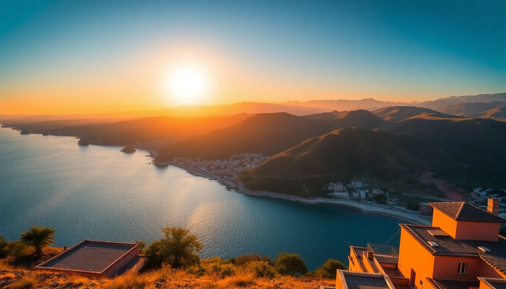

Best Time to Visit Peru: Month-by-Month Guide for 2025

I’ve been to Peru three times now, and each trip taught me something different about timing. The first time I went in January and got soaked on the Inca Trail. The second time I hit Lima in July and froze in a hoodie. The third time—February—I lucked into empty ruins and cheap flights. This guide breaks down exactly what to expect month by month across Lima, Cusco, and Machu Picchu so you can pick the dates that work for your budget, tolerance for rain, and crowd comfort.
What is the weather really like in Peru throughout the year?
Peru’s geography means you can’t pack for the whole country the same way. Lima sits on the coast and stays mild year-round, but from May to November it’s socked in by garúa—a thick coastal fog that makes the city feel damp and grey. Cusco and Machu Picchu are high in the Andes, so they have a dry season (May to September) and a wet season (October to April). The wet season brings afternoon downpours, but also greener mountains and way fewer tourists.
- Lima in summer (Dec–Apr): sunny, 25–28°C, humid. Winter (May–Nov): grey, 18–20°C, damp.
- Cusco in dry season (May–Sep): cold mornings (near 0°C), warm afternoons (20°C), clear skies.
- Machu Picchu in wet season (Oct–Apr): rain most afternoons, but the cloud forest feels alive. Dry season: crisp mornings, sunny midday, muddy trails.
When is the best time to visit Lima?
I’ll be blunt: Lima is at its best from December through April. That’s when the sun burns off the marine layer by late morning and you can actually enjoy the Malecón in Miraflores without a jacket. January and February are peak summer—locals flood the beaches in Barranco, and the ceviche spots along the Costa Verde are buzzing. I stayed at Hotel B in Barranco one February, and the rooftop terrace was perfect for afternoon pisco sours.
Avoid Lima in July and August if you want sun. The garúa is relentless. I walked from Miraflores to San Isidro one July afternoon and ended up buying a cheap fleece from a street vendor. The food scene is still great—Maido and Central don’t care about the weather—but the city feels moody.
- Best months: January–March (sunny, lively, but pricier).
- Cheapest months: June–August (grey, but hotel rates drop 30–40%).
- My pick: February—warm, fewer international tourists, and the Fiesta de la Candelaria in nearby Puno is a bonus.
When should I go to Cusco to avoid rain and crowds?
Cusco’s dry season runs from May to September, and that’s when most travelers go. The Plaza de Armas is packed, the San Pedro Market is elbow-to-elbow, and you’ll need to book Hotel Arqueólogo or Belmond Hotel Monasterio months in advance. But the trade-off is reliable weather. I hiked up to Sacsayhuamán in June and had clear views of the city all day—no rain, no mud.
If you can handle some rain, April and October are the sweet spots. The crowds thin out, prices drop, and the landscape is still lush from the wet season. I did the Rainbow Mountain trek in late October and only saw about 15 other hikers. The trail was a bit sloppy near the top, but the colors popped against the overcast sky.
- Dry season: May–September. Crowded, expensive, but reliable.
- Shoulder months: April and October. Fewer people, lower prices, occasional rain.
- Avoid: December–March if you hate mud. The Inca Trail closes in February for maintenance.
What’s the best month for Machu Picchu?
Machu Picchu doesn’t have a perfect month—you’re always trading something. I went in February once, which is the rainiest month, and also the cheapest. The site was nearly empty. I walked through the Temple of the Sun without anyone in the frame. But the clouds rolled in by 10 a.m. and I couldn’t see the classic postcard view until noon. The train from Ollantaytambo to Aguas Calientes was delayed by mudslides twice.
My favorite visit was in May. The dry season was just starting, so the grass was still green, the crowds were manageable, and the morning light hit Huayna Picchu perfectly. I stayed at Sumaq Machu Picchu Hotel in Aguas Calientes—pricey, but the hot springs after a long hike are worth it.
- Best overall: May and September. Good weather, moderate crowds, decent prices.
- Cheapest: February. Rainy, but you’ll have the ruins almost to yourself.
- Avoid: August. Peak crowds, high prices, and the trails are dusty.
How does the Inca Trail affect my timing?
The Inca Trail is closed every February for maintenance and trail restoration. That’s non-negotiable. If you want to hike it, you’re looking at March through January, with the best conditions from May to September. Permits sell out months in advance for the dry season—I booked my June permit in January and barely got a spot.
For the short Inca Trail (two days), the same rules apply. For the Salkantay Trek or Lares Trek, those are open year-round, but I’d skip December–March unless you love wet socks. I did the Salkantay in November and the last day into Santa Teresa was a slog through mud.
- Inca Trail: Closed all February. Permits for May–September go fast—book by January.
- Alternatives: Salkantay (open year-round, but wet Oct–Apr), Lares (better for cultural immersion, drier May–Sep).
What about festivals and holidays?
Peru’s festivals can make or break a trip. I accidentally landed in Cusco during Inti Raymi (June 24) and the city was a zoo—parades, street parties, and every hostel tripled their rates. It’s a spectacle, but if you want quiet ruins, skip it.
Semana Santa (March/April) in Cusco is huge. Processions fill the Plaza de Armas, and hotels book up weeks ahead. I found it fascinating but exhausting. Fiesta de la Candelaria in Puno (early February) is Peru’s biggest festival—think dancing, music, and alpaca wool sweaters everywhere. If you’re in Lima, Señor de los Milagros (October) brings massive purple-clad processions through the city center.
- Inti Raymi: June 24. Cusco is packed. Book everything six months ahead.
- Fiesta de la Candelaria: Early February. Puno is insane but incredible.
- Semana Santa: Late March/early April. Cusco is busy but the energy is unique.
FAQ
Is Peru safe to visit in the rainy season? Yes, but with caveats. Landslides can close roads and train lines, especially around Machu Picchu and the Sacred Valley. In February 2023, the train to Aguas Calientes was suspended for three days after a mudslide. If you’re flexible and have travel insurance, it’s fine. Just pack a waterproof jacket and quick-dry pants. I did a February trip and missed the Inca Trail, but I spent those days eating my way through the San Pedro Market in Cusco—no regrets.
Do I need altitude sickness pills for Cusco? Most people feel the altitude in Cusco (3,400m). I get headaches and light sleep the first two nights. Chewing coca leaves or drinking coca tea helps, but acetazolamide (Diamox) is more reliable. I picked up a prescription from my doctor before my first trip. Stay at Hotel Rumi Punku in the San Blas neighborhood—it’s a bit uphill, but quieter and the staff handed out coca tea on arrival. Avoid alcohol and heavy meals the first day.
Can I visit Machu Picchu in one day from Cusco? Technically yes, but I wouldn’t. You’ll spend six hours on trains and buses to see the ruins for two hours. I did it once and felt rushed. Better to stay overnight in Aguas Calientes—I liked Tierra Viva Machu Picchu for a mid-range option. You get the first bus up at 5:30 a.m., beat the day-trippers, and have time to hike Huayna Picchu or Machu Picchu Mountain without racing back.
Conclusion
- For best weather overall: May or September. Dry, green, and not peak-crowded.
- For cheapest trip: February. Rainy but empty ruins and low prices.
- For Lima specifically: January–March for sun. July–August for deals.
- For Cusco and Machu Picchu: April or October for shoulder-season balance.
- Book ahead if: You want the Inca Trail (permits go fast) or a hotel in Miraflores during Lima’s summer.